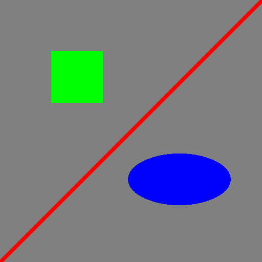

https://pillow.readthedocs.io/en/latest/reference/ImageDraw.html
The 'ImageDraw' module provides simple 2D graphics for Image objects. You can use this module to create new images, annotate or retouch existing images, and to generate graphics on the fly for web use.
# Example: Draw a gray cross over an image.
import sys
from PIL import Image
from PIL import ImageDraw
im = Image.open("hopper.jpg")
# https://pl.m.wikipedia.org/wiki/Plik:Grace_Hopper.jpg
# Create a Draw object.
draw = ImageDraw.Draw(im)
draw.line((0, 0) + im.size, fill='gray')
draw.line((0, im.height, im.width, 0), fill='gray')
# Write to stdout.
#im.save(sys.stdout, "PNG")
im.show()
# Colors for RGB images. black = (0, 0, 0) gray = (128, 128, 128) white = (255, 255, 255) red = (255, 0, 0) green = (0, 255, 0) blue = (0, 0, 255) yellow = (255, 255, 0) magenta = (255, 0, 255) cyan = (0, 255, 255)
# Create a solid image.
im = Image.new("RGB", (512, 512), 'gray') # gray background
# Create a Draw object.
draw = ImageDraw.Draw(im)
# draw.line(xy, fill=None, width=0, joint=None)
# xy : (x1, y1, x2, y2), 4-tuple
draw.line((0, im.height, im.width, 0), fill='red', width=8) # line /
# draw.rectangle(xy, fill=None, outline=None, width=0)
# xy : two points (upper left, lower right)
draw.rectangle((100, 100, 200, 200), fill='green')
# draw.ellipse(xy, fill=None, outline=None, width=0)
# xy : two points to define the bounding box
draw.ellipse((250, 300, 450, 400), fill='blue')
# draw.polygon(xy, fill=None, outline=None)
# xy : a sequence of points, the first connects the last
im.show()
